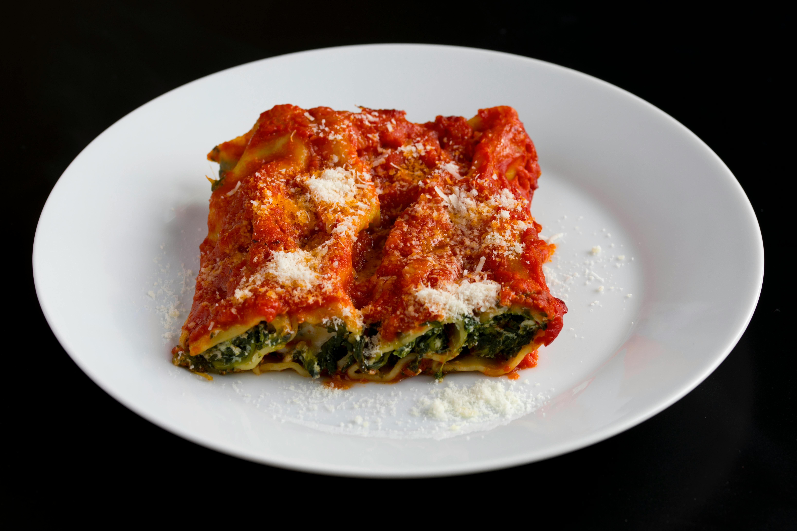

Home
Lasagna

Lasagna Ingredients
- Lasagna noodles
- Ground beef
- Tomato sauce
- Ricotta cheese
- Mozzarella cheese
- Parmesan cheese
- Onion
- Garlic
- Olive oil
- Salt and pepper
Lasagna Instructions
- Preheat the oven to 180°C (350°F).
- Cook the lasagna noodles according to the package instructions.
- Heat olive oil in a pan and sauté chopped onion and garlic.
- Add ground beef and cook until browned.
- Pour in the tomato sauce and let it simmer for a few minutes.
- Spread a layer of sauce in a baking dish.
- Add a layer of noodles, then ricotta and mozzarella cheese.
- Repeat the layers until the dish is full.
- Top with parmesan cheese.
- Bake for about 30–40 minutes until golden and bubbly.